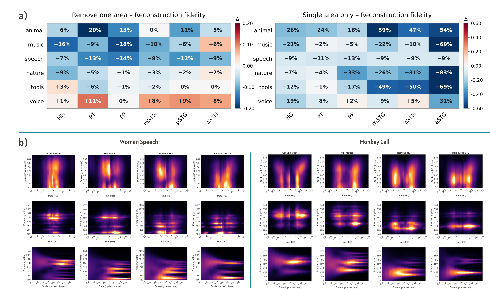
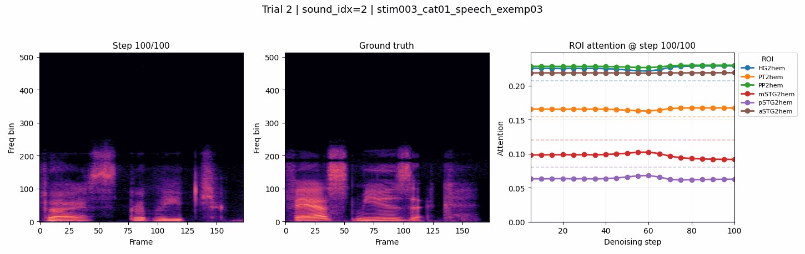
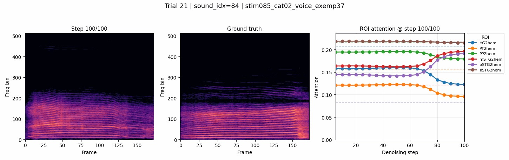
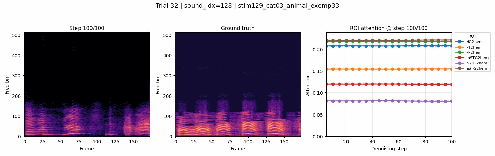
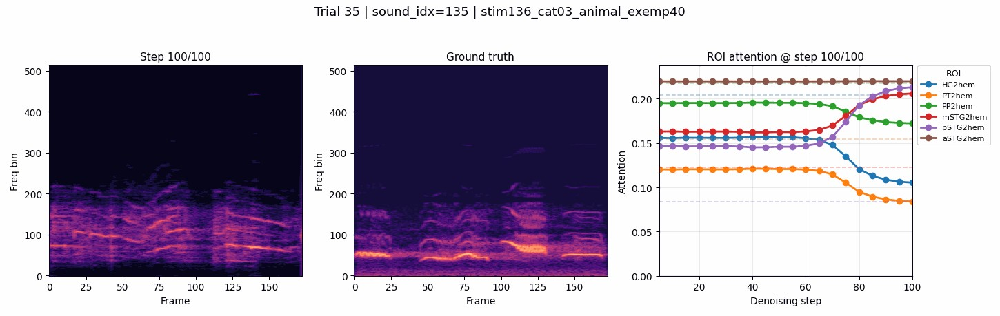
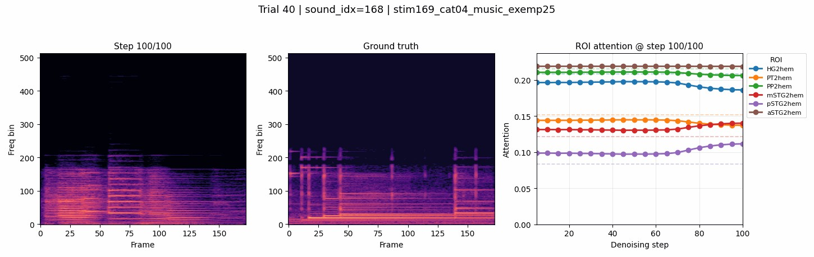
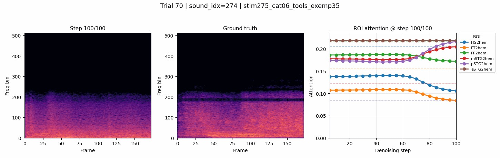

Baby crying
Human soundsOriginal
Reconstructed
Auditory neuroscience · Generative AI
Reconstructing sound from fMRI with a directly conditioned audio diffusion model.
Brain signals in. Audio waveforms out.
A direct connection between auditory cortex and generative audio.
01 / The idea
Can a generative model reconstruct sounds directly from responses in the auditory cortex?
BrainSounds explores a direct route from fMRI beta responses to audio. Instead of first predicting an intermediate semantic representation, the framework converts neural responses into brain tokens that condition a pretrained audio diffusion model through cross-attention.
This provides a way to study both sound reconstruction and the contributions of different auditory cortical regions.
02 / The framework
Brain tokens connect regional fMRI responses to the generative audio model.
Project fMRI responses from six auditory regions into regional representations.
Combine the regional representations into conditioning tokens.
Inject brain tokens through cross-attention to guide sound generation.
 ↗
↗03 / Listen & compare
Listen to the original stimulus and its reconstruction from fMRI. Each pair includes a spectrogram.
Original
Reconstructed
Original
Reconstructed
Original
Reconstructed
Original
Reconstructed
Original
Reconstructed
Original
Reconstructed
Original
Reconstructed
Original
Reconstructed
Original
Reconstructed
Play either audio track to animate its spectrogram. Starting another track pauses the previous one.
04 / Cortical contributions
Exploring the role of individual auditory areas.
Removal and single-area analyses examine how reconstruction changes when a region is excluded or used in isolation. The figure compares reconstruction fidelity across sound categories and illustrates spectrotemporal changes in selected examples.

↗05 / The generation process
Explore how the reconstructed spectrogram evolves over diffusion steps. Select a sequence to play the animation.

↗
↗
↗
↗
↗
↗Explore the research
Read the paper and explore the implementation.